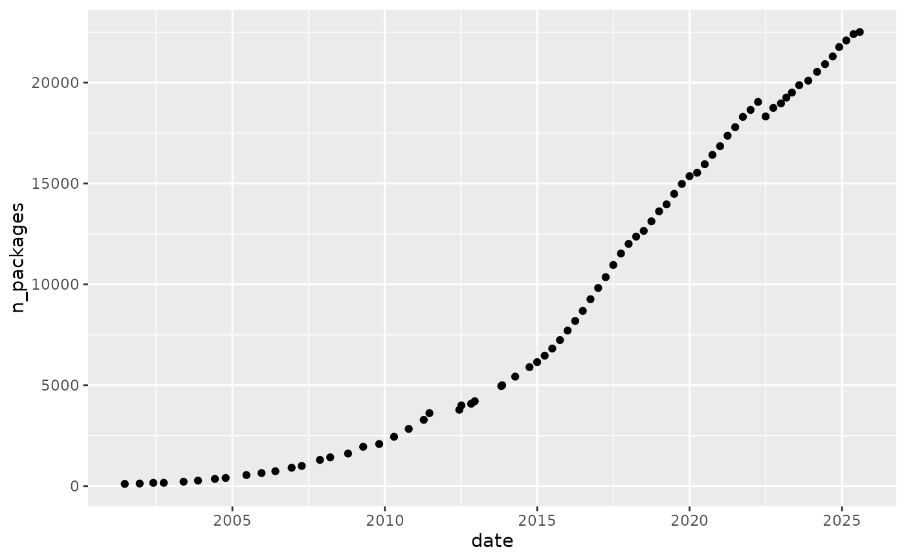

Table with the number of packages available on CRAN and the current R version for historic dates back to 21 June 2001.
Format
A data frame with 70 rows and 4 variables.
- date
date
- n_packages
the number of available R packages on CRAN
- version
the then current version of R
- source
source of the data (see 'Details')
Details
Data on the number of packages on CRAN between 2001-06-21 and 2014-04-13
is obtained from
CRANpackages
from the package Ecdat.
This data was collected by John Fox and Spencer Graves.
Intervals between data points are irregularly spaced. These data are
marked with "John Fox" or "Spencer Graves" in the column source.
They are licenced under GPL-2/GPL-3.
Data between 2014-10-01 and 2023-03-06 was collected by the package author
from CRAN snapshots on Microsoft's MRAN, which was retired on 1 July 2023.
Data was collected on the first day of each quarter.
These data are marked with "MRAN" in the column source.
Newer data has been collected in irregular intervals using the functions
n_available_packages() and available_r_version().
These data are marked with "CRAN" in the column source.
Examples
library(ggplot2)
ggplot(cran_history, aes(x = date, y = n_packages)) +
geom_point()
